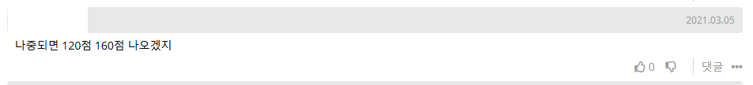
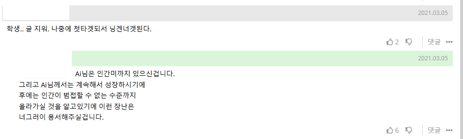

병신에서 대한민국 입시판 뒤흔들기까지 불과 8년

미래를 본 개붕이

진짜로 인간이 범접할 수 없는 수준까지 도달함 ㄷㄷ
병신에서 대한민국 입시판 뒤흔들기까지 불과 8년

미래를 본 개붕이

진짜로 인간이 범접할 수 없는 수준까지 도달함 ㄷㄷ
우리 다 같이 좆됐어ㅋㅋ
토끼찜이온다
진우햄은 8년만이 평균7등급에서 전국3등했다고 의심받다가 갔는데 ai는8년만에 9등급 점수에서 만점 받은건 왜 아무도 의심 안하냐..
AI는 증명을 해버림 ㅋㅋ
AI냥이
ai는 무대로 나왔잖아 ㅋㅋ
2015년도에 딥러닝으로 서버 자동으로 고치는거 개발하겠다면서 나한테 상사가 시킨 적있는데 그냥 계속 할걸
줜나 쓸때없는거 시키노 하고 짜증나서 탈주함
A.i 라는게 손오공이 쓰는 원기옥과 동일한데 그런 에너지가 전세계적으로 모이면 이런결과가 나오는건 당연한거였음.. ㅜㅜ
병신임 ㅇㅈㄹ ㅋㅋㅋㅋㅋ
아직도 ai 허상이라고 말하는 애들은 ai가 업무와 밀접하지 않고나 써본적 없는 애들이더라
그냥 야짤이나 만들고 챗봇으로 쓰는 애들은 피쳐폰-스마트폰 전환기에 스마트폰으로 문자하는거같음
바둑에서 이세돌 따는데 수학16점 영어12점이었던 거네 ㅋㅋ
그거는 바둑만 전용으로 학습돌린 ai 였던거고 저건 어떤모델인지 모르겠지만 일반적인 모델이었을듯
앞으로 수능은 어떻게 될지 궁금하네
Ai활용능력 이런걸로 대체 될려나 ㅋㅋ
인간이 신을 만들고있다
발전속도 봤을때 진짜 말이 안되는 수준이긴 함
점진적으로 더 빨라진다는게 젤 무서운 부분이야
ai 발전속도 급가속 붙는게 진짜 말이 안됨